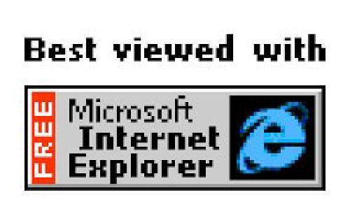
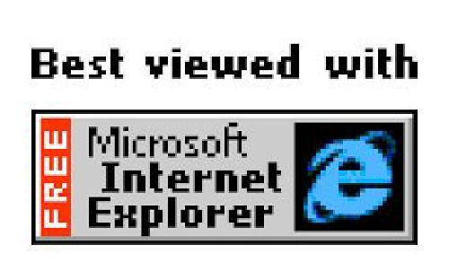
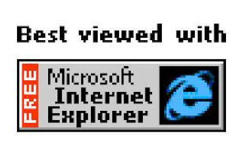
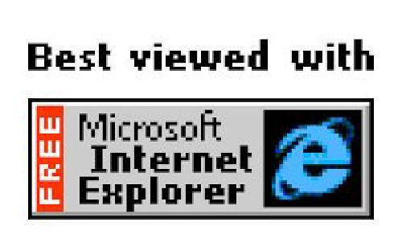

O propósito deste site é ser um hub que agrega minha pagina de TCC e meu diário de atividades de MAC0470. Isso é para o que ele serve, e você pode usar o rústico menu de navegação acima para navegá-lo. Mas o que ele cumpre com certeza não esgota o que ele é.
Esta webpage é, é mais que isso. É um throwback à antiga web. É um meme, de certa forma. É um respiro de expressão e irreverência no meio de uma web mecânica, responsiva, padronizada e de letal eficiência. É um website provisório, para um site mecânico e mais "apresentável", que tem que vir por porquês chatos.
O site é uma aplicação HTML + CSS + Vanilla.js, assim como faziam os astecas. Eu gostaria muito de criar uma estética web-anos-2000, que é incrivel como toda estética anos 2000 é, mas ainda não sou um designer competente suficiente para isso. Para um site provisório, acabei me apegando talvez um pouco demais a ideia.
Espero que e leitore aproveite este website com o espírito certo.
Como já dito, as páginas que temos aqui são: a webpage do meu TCC, com todas suas descrições, seriedades e barangadans, e o blog/diário de MAC0470.